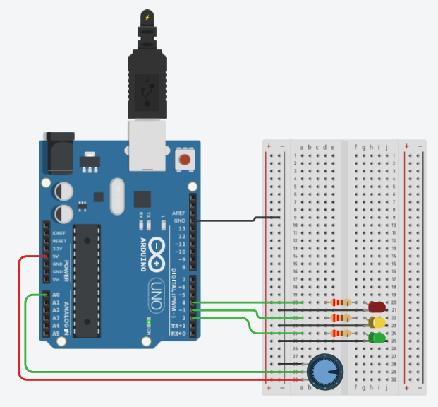

Fundamento de Eletroeletrônica
Tipos de Componentes Eletroeletrônicos
Componentes eletrônicos são peças usadas para construir circuitos e dispositivos eletrônicos. Cada componente tem uma função, como controlar a corrente, armazenar energia, emitir luz, etc. Quando conectados entre si, eles permitem a criação de aparelhos como celulares, computadores, rádios e brinquedos eletrônicos funcionem corretamente.
Resistor
Limita ou controla a passagem de corrente em um circuito. É usado para proteger componentes e ajustar níveis de tensão.
Transistor
Usa uma corrente fraca para controlar uma forte, como um interruptor que liga/desliga dependendo da corrente que recebe.
Circuito Integrado
São chips que reúnem vários componentes em um único bloco muito pequeno, permitindo funções complexas em pouco espaço.
Diodo
Impede a corrente de passar em apenas um sentido, quase como uma válvula eletrônica.
Diodo LED
Assim como o diodo, também impede a corrente de passar em uma direção - mas a sua principal função é gerar luz.

Display de 7 Segmentos
Um componente capaz de representar números de 1-9 (e algumas letras, com dificuldade) formados de apenas 7 linhas.
Sensores em Sistemas Automatizados
Os sensores em sistemas automatizados são responsáveis pela coleta de dados e monitoramento do ambiente. É como se alguém estivesse dizendo ao computador o que está acontecendo com algum ponto do ambiente, o tempo todo.
Sensor de Temperatura

Sensor de Umidade
Sensor de Luminosidade

Sensor de Giro
Sensor de Movimento

O que é e como funciona um Arduíno?
O Arduino é uma plataforma de prototipagem eletrônica que permite a criação de diversos projetos e sistemas automatizados de maneira simples. Ele é composto por uma placa com um microcontrolador que pode ser programada para interagir com sensores e atuar em dispositivos como LEDs e motores. Utilizando a linguagem de programação C/C++, os usuários podem escrever código para ler entradas (sensores) e controlar saídas (atuadores) com base em condições definidas no programa.
Para que serve?
O Arduino é usado em diversas aplicações, como automação residencial, robótica, sistemas de monitoramento, controle de dispositivos e protótipos eletrônicos. Pode ser utilizado para projetos que envolvem desde o simples controle de LEDs até sistemas complexos, oferecendo uma solução prática para desenvolvedores e hobbyistas que querem criar dispositivos interativos e inteligentes.
Prós e Contras
Prós: O Arduino é fácil de aprender, acessível e ideal para iniciantes em eletrônica e programação. Sua comunidade ativa oferece muitos recursos, tutoriais e bibliotecas prontas, tornando o desenvolvimento de projetos mais rápido e simples.
Contras: Embora seja versátil, o Arduino pode ter limitações em termos de capacidade de processamento e memória, o que pode restringir o uso em projetos que demandam grande desempenho.
Arduino com Request/Response
O vídeo mostra um Arduino recebendo instruções de uma API feita com Express, ligando e desligando um LED conforme o input enviado pelo usuário.
Arduino com Interface Gráfica
Neste exemplo, um site simples é utilizado para enviar requests, permitindo que um clique no botão da página ligue ou desligue o LED no Arduino.
Saídas em Circuitos Integrados
As saídas de circuitos integrados são interfaces que permitem controlar dispositivos externos. Elas podem ser digitais, enviando sinais binários (ligado/desligado), ou analógicas, fornecendo níveis variáveis de tensão para controle preciso de equipamentos.
Saídas Digitais
Controlam dispositivos como relés, LEDs e motores com sinais binários (1's e 0's)
Saídas Analógicas
Fornecem sinais de tensão variável para controle gradual dos componentes.
Entradas em Circuitos Integrados
As entradas de circuitos integrados permitem que o microcontrolador receba informações do ambiente externo através de sensores e dispositivos. Assim como as saídas, elas podem ser digitais, detectando apenas estados ligado/desligado, ou analógicas, medindo valores variáveis de tensão.
Entradas Digitais
Detecta o estado binário (HIGH / LOW) de botões, chaves e sensores digitais para tomada de decisões no programa.
Entradas Analógicas
Le valores variáveis de tensão vindos de sensores analógicos, convertendo-os em dados para processamento.
Calculadoras de Eletroeletrônica
Lei de Ohm
Calcula a relação entre tensão, corrente e resistência em um circuito elétrico através das três fórmulas fundamentais.
Ver Código
// cálculos da Lei de Ohm
let btnCalc1 = document.getElementById('btnCalc1');
let input1a = document.getElementById('input1a');
let input1b = document.getElementById('input1b');
let input2a = document.getElementById('input2a');
let input2b = document.getElementById('input2b');
let input3a = document.getElementById('input3a');
let input3b = document.getElementById('input3b');
let resTensao = document.getElementById('resTensao');
let resCorrente = document.getElementById('resCorrente');
let resResistencia = document.getElementById('resResistencia');
function filtrarNaN(valor) {
if (isNaN(valor) || !isFinite(valor)) {
return 0;
} else {
return Number(valor);
}
}
// calc. Lei de Ohm
btnCalc1.addEventListener('click', () => {
// V = I × R
const tensao = Number(input1a.value) * Number(input1b.value);
resTensao.innerHTML = filtrarNaN(Number(tensao.toFixed(2))) + ' V';
// I = V ÷ R
const corrente = Number(input2a.value) / Number(input2b.value);
resCorrente.innerHTML = filtrarNaN(Number(corrente.toFixed(2))) + ' A';
// R = V ÷ I
const resistencia = Number(input3a.value) / Number(input3b.value);
resResistencia.innerHTML = filtrarNaN(Number(resistencia.toFixed(2))) + ' Ω';
});Cálculo de Potência
Determina a potência elétrica consumida ou dissipada por componentes utilizando diferentes combinações de tensão, corrente e resistência.
Ver Código
// cálculos de potência
let btnCalc2 = document.getElementById('btnCalc2');
let input4a = document.getElementById('input4a');
let input4b = document.getElementById('input4b');
let input5a = document.getElementById('input5a');
let input5b = document.getElementById('input5b');
let input6a = document.getElementById('input6a');
let input6b = document.getElementById('input6b');
let resPotencia1 = document.getElementById('resPotencia1');
let resPotencia2 = document.getElementById('resPotencia2');
let resPotencia3 = document.getElementById('resPotencia3');
function filtrarNaN(valor) {
if (isNaN(valor) || !isFinite(valor)) {
return 0;
} else {
return Number(valor);
}
}
btnCalc2.addEventListener('click', () => {
// P = V × I
const potencia1 = Number(input4a.value) * Number(input4b.value);
if (resPotencia1) resPotencia1.innerHTML = filtrarNaN(Number(potencia1.toFixed(2))) + ' W';
// P = I^2 × R
const potencia2 = (Number(input5a.value) ** 2) * Number(input5b.value);
if (resPotencia2) resPotencia2.innerHTML = filtrarNaN(Number(potencia2.toFixed(2))) + ' W';
// P = V^2 ÷ R
const potencia3 = (Number(input6a.value) ** 2) / Number(input6b.value);
if (resPotencia3) resPotencia3.innerHTML = `${filtrarNaN(Number(potencia3.toFixed(2)))} W`;
});Leitura de dados de um sensor analógico, acionando saídas digitais
O código lê a saída do potênciometro e aciona as saídas digitais correspondentes aos LEDs dependendo do nível.

Ver Código
Ver Código
// C++ code
void setup()
{
pinMode(A0, INPUT);
pinMode(2, OUTPUT);
pinMode(3, OUTPUT);
pinMode(4, OUTPUT);
}
void loop()
{
Serial.println(analogRead(A0));
if (analogRead(A0) <= 921) {
digitalWrite(2, HIGH);
digitalWrite(3, LOW);
digitalWrite(4, LOW);
}
if (analogRead(A0) <= 716) {
digitalWrite(2, LOW);
digitalWrite(3, HIGH);
digitalWrite(4, LOW);
}
if (analogRead(A0) <= 307) {
digitalWrite(2, LOW);
digitalWrite(3, LOW);
digitalWrite(4, HIGH);
}
delay(10);
}